土曜の夕方から始まった富山旅行。
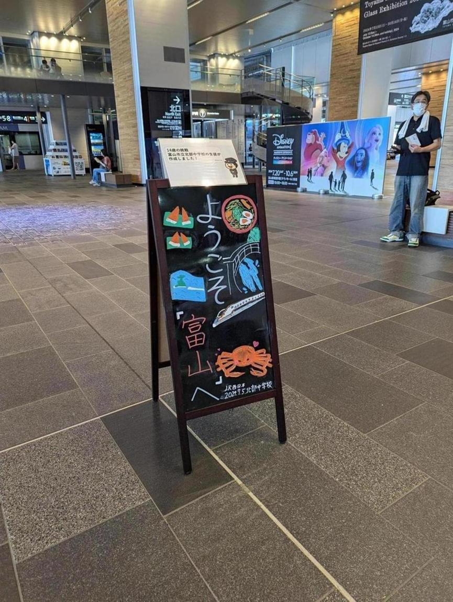 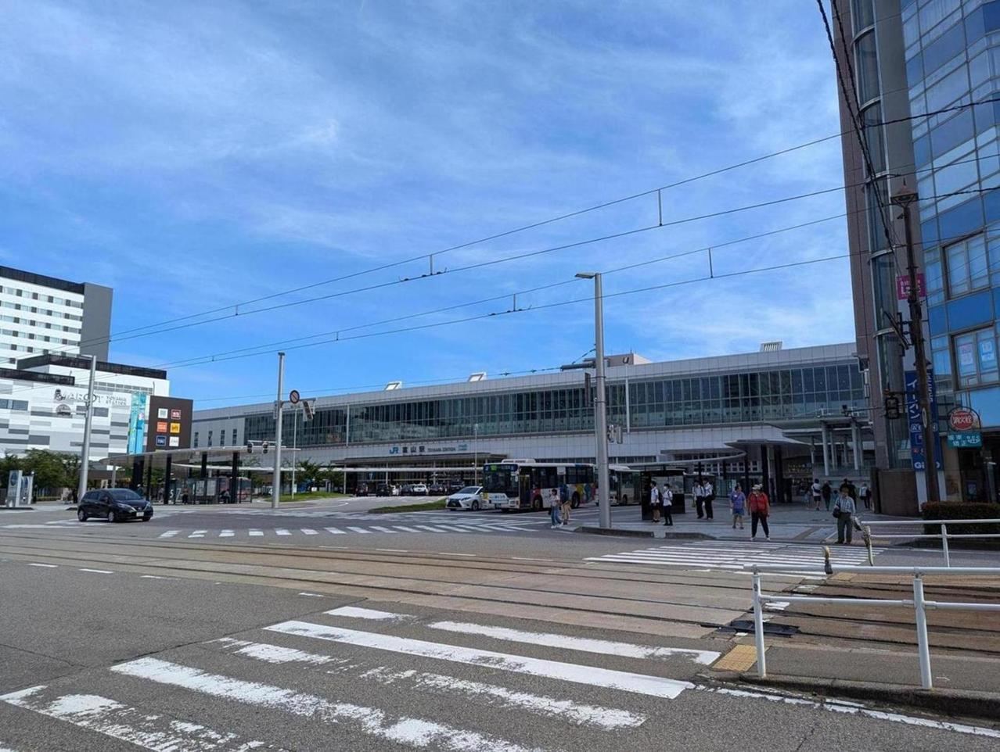
富山駅は都会的で、外観は札幌駅に似ている。中は札幌駅よりもきれいというか、新しい感じだ。
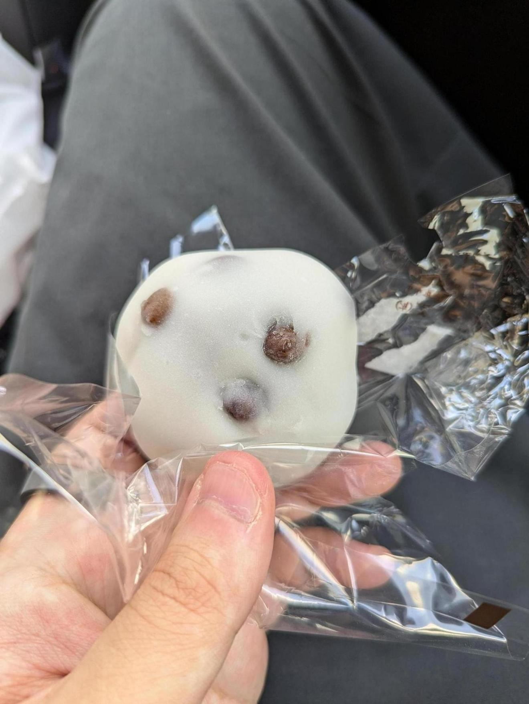
石谷もちやという店のえんどう豆大福。評判がいいので行ってみた。確かにうまい。普段団子や大福を食べないのだが、これはうまかった。
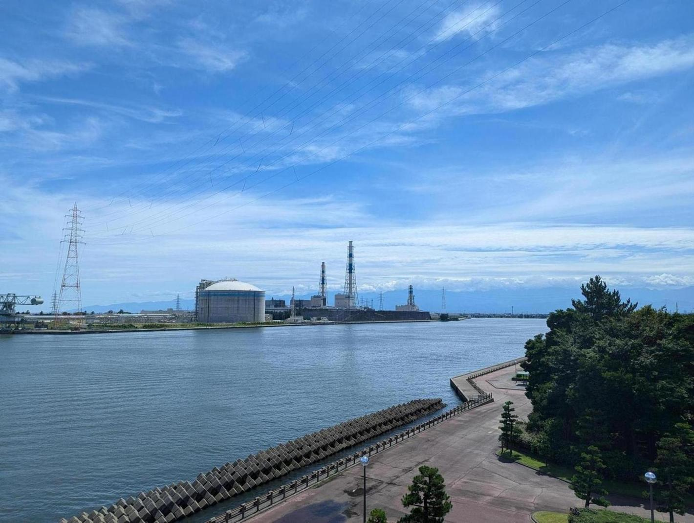
富山湾。天気が良かった。
なんとなく、北陸は関東より涼しいようなイメージもあったのだが、別に涼しくなかった。とても暑い。
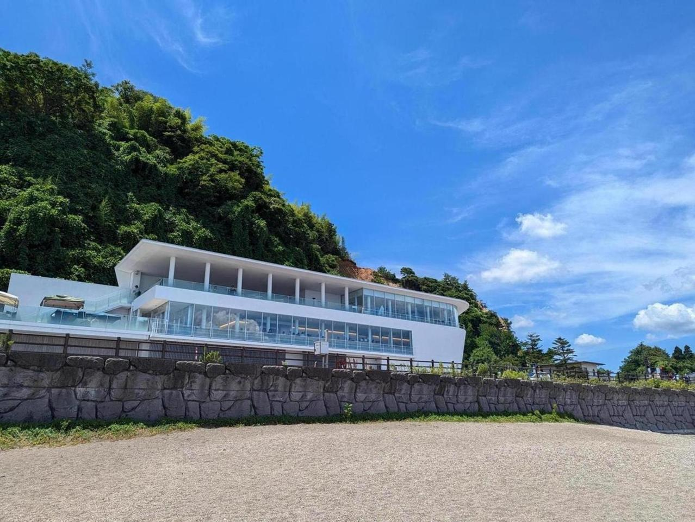
今回行きたいと思っていた、高岡市にある「道の駅 雨晴」。「あまはらし」と読む。このあたりの地名らしい。かっこいい名前。
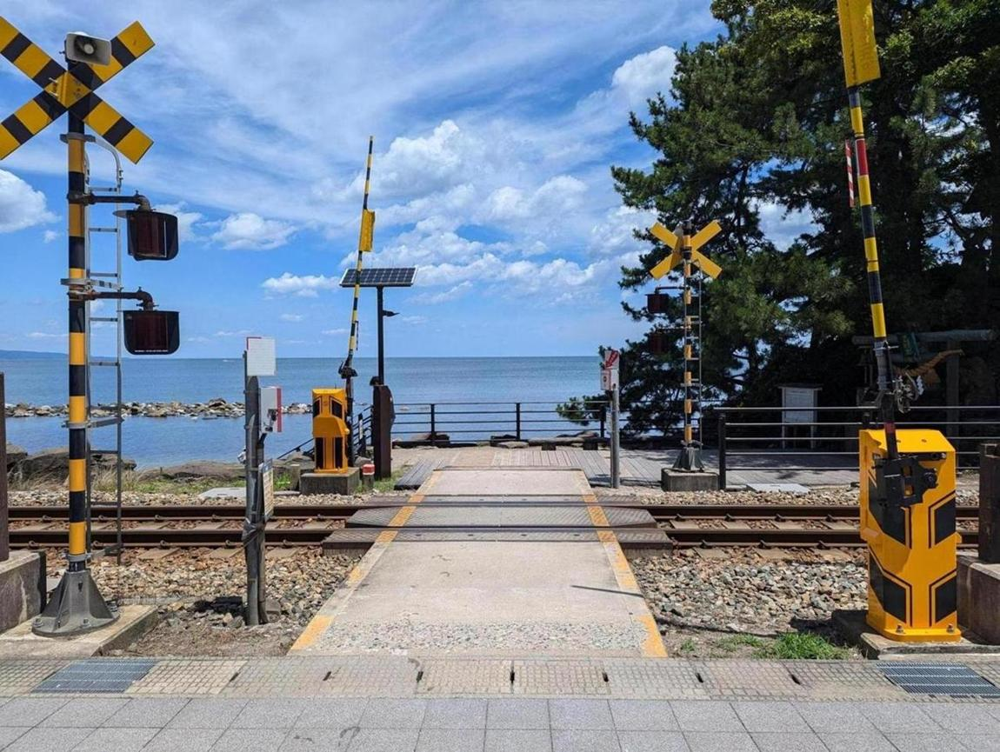 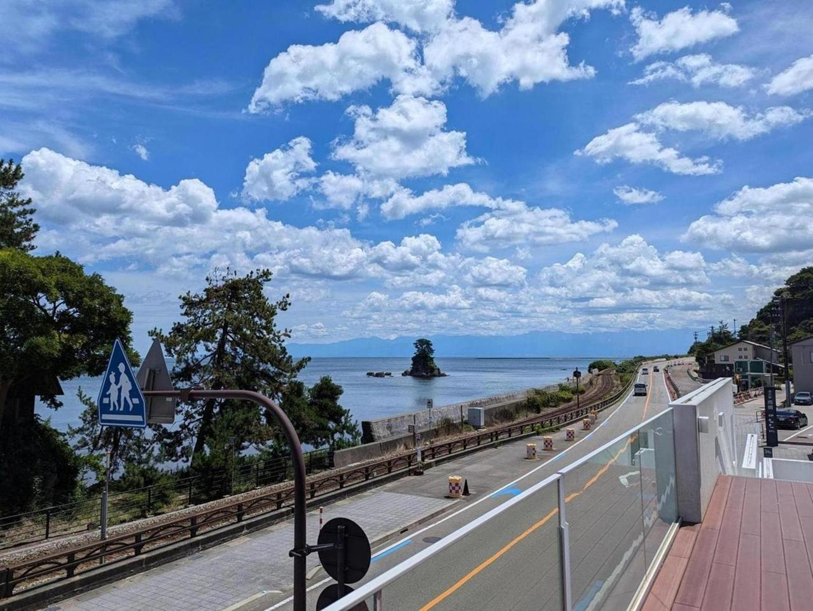 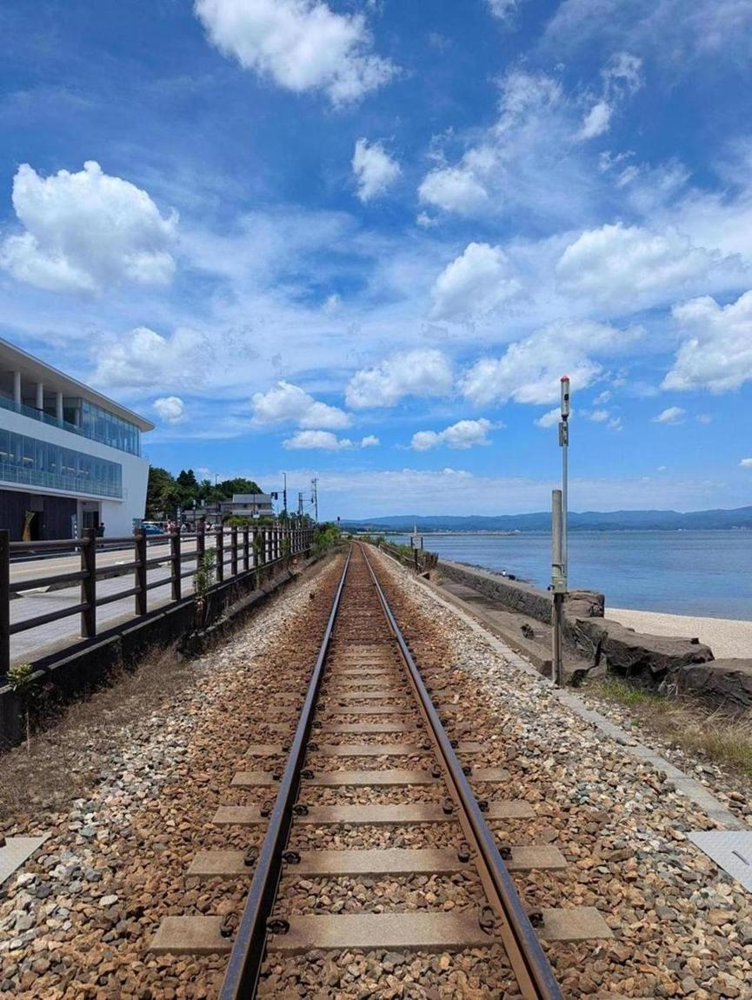
道端に小さめの道の駅があるのだが、道を挟んですぐが海になっており、すぐ近くに踏切がある。良いロケーション。海と立山連峰が一望できる。今回は少し雲がかかっていたが。
ここまで、富山駅のあたりから車で1時間もかからない。高岡や氷見の方に行くにあたっては途中で寄れるおすすめスポットだった。
そして、「道の駅氷見」の横にある寿司屋へ行った。
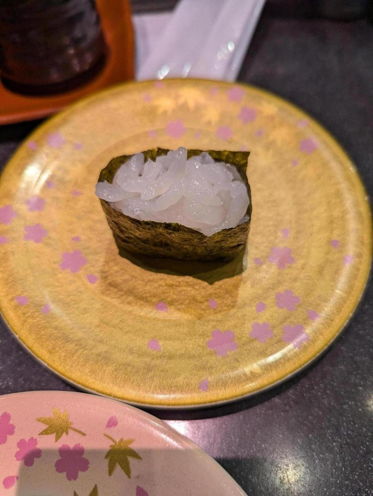
白えび。 今年は白えびが不漁だから値段が上がっていたらしい。この店では一貫で960円くらいした。味は上品な甘海老のようで美味しい。
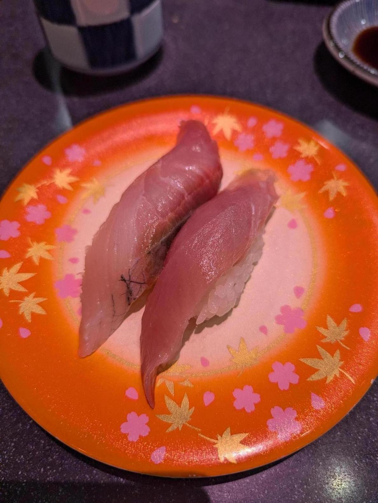
鰤。私は鰤のほうが好き。刺身で一番好きかも。
他にも色々食べた。満足。日曜の12時頃だったが、待ちは5組で割とすぐ入れたのも良かった。
富山市内に戻って、「富山市ガラス美術館」へ。ここは常設展だけなら入場料が大人200円と安い。 この写真の場所は展示の中ではなく、館内の写真。ここは建物全体が美術館と図書館でできており、美術館部分に入らなくても誰でも図書館部分にアクセスできる。
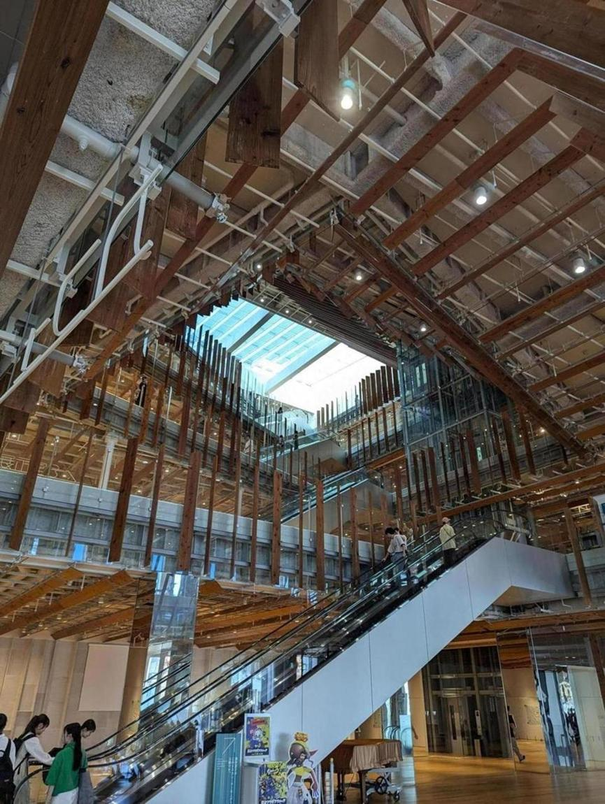
この図書館が凄かった。建物全体を隈研吾がデザインしたようなのだが、とても洗練されている。実際にとてもたくさんの人に使われていて、こんな図書館が家の近くにあったらいいなと思った。
美術館の部分は、写真を撮ってはいけないエリアと、撮ってもいいがインターネット上へのアップロードができない場所に分かれている。後者の方は何枚か撮った。なぜこういうルールにしているのかはわからないが、なんとなくいいルールだなと思った。
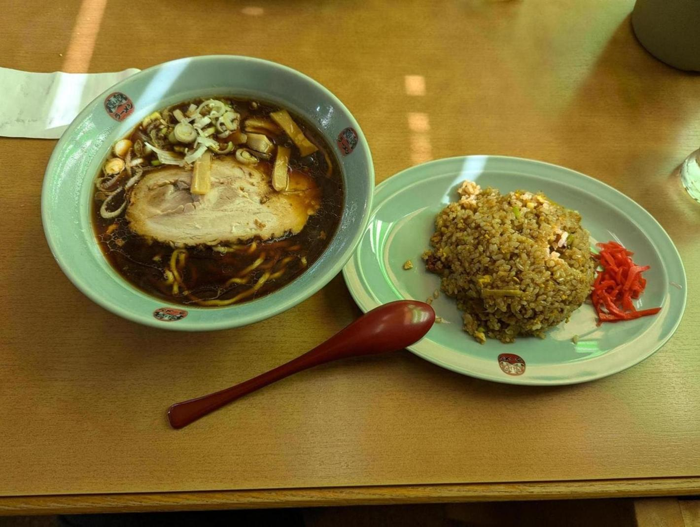
そしてラーメン。 「ダルマヤラーメン 新庄店」の「ヤング」というラーメンと半チャーハンを食べた。めちゃくちゃ美味かった。いわゆる富山ブラックというやつらしい。やっぱラーメンは醤油だなと思った。味噌とか豚骨とか塩って、大きく言えば全部同じなんじゃないかと思ってる。醤油は奥行きがあるイメージだ。実際はいろいろな味があるんだろうけど。
富山は富山湾、立山連峰といった自然環境もありつつ、図書館や美術館といった文化資本が揃っている。街なかには城址公園もあるし、明らかに古くからあるんだろうなという立派な瓦屋根の住宅も多く見た。 食文化はいわずもがなだし、総じて文化的なレベルが高いなと感じた。新幹線で東京から2時間という立地も絶妙で、人でごった返してはいないが行こうと思えばすぐ行ける、といったイメージ。冬はしっかり雪が降るが、夏の景色もいい。富山駅のあたりは都会でなんでもある。思ってたよりすごい街だった。また行くと思う。